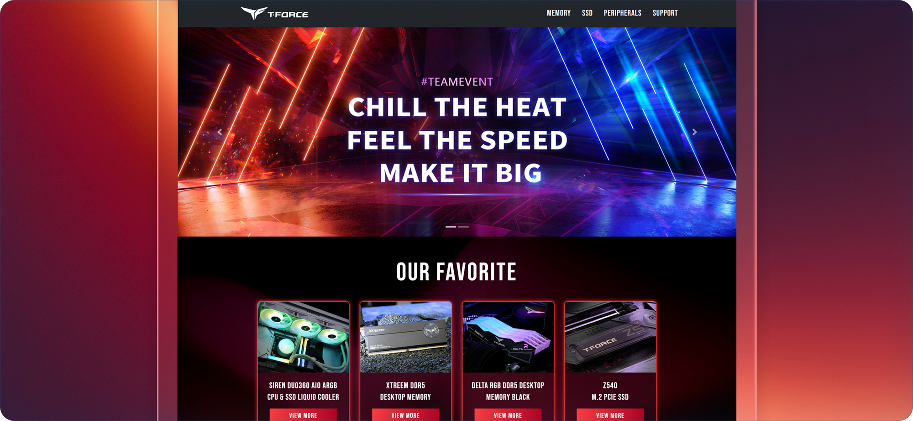
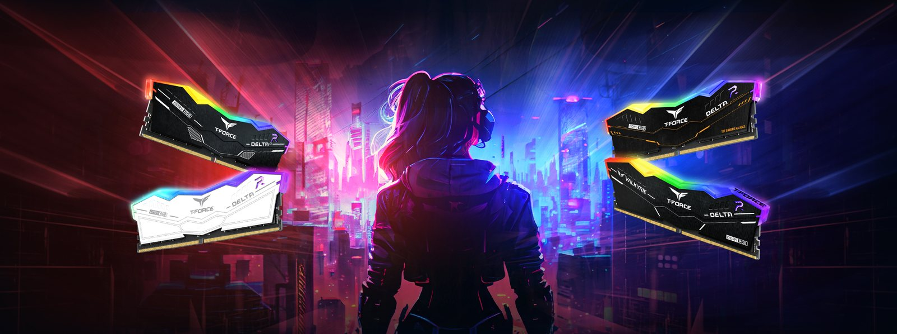
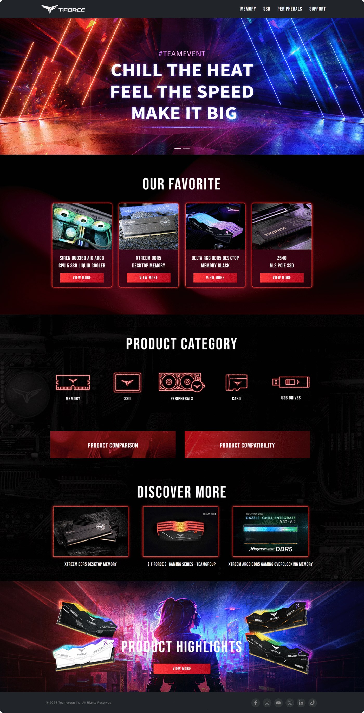
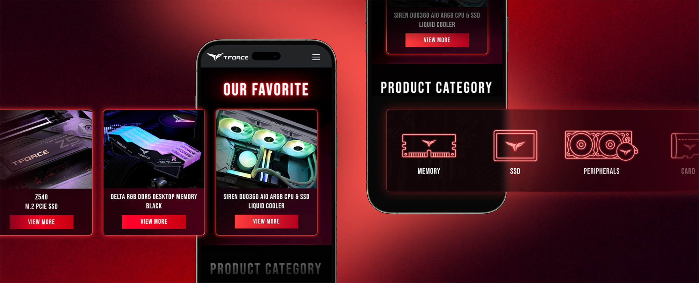
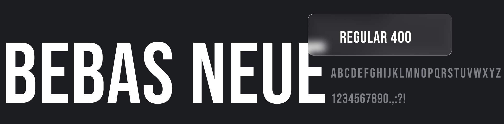

T-FORCE - Gaming Brand Event
T-FORCE 是 TEAMGROUP 旗下專為電競玩家打造的品牌，產品線涵蓋記憶體、SSD 與週邊配件。這次專案重新梳理品牌活動頁的內容架構與視覺語彙，打造更具品牌特色且流暢易讀的瀏覽體驗。

在強烈視覺風格下保持清晰易讀
電競品牌活動頁需要兼顧氣氛與資訊傳遞，這次的重點是找到霓虹光效、深色背景與商品可讀性之間的平衡。
多產品線的資訊整合
從記憶體、SSD 到週邊配件，橫跨五大產品分類的內容需要在同一頁面裡清楚分層，讓玩家能快速找到想看的商品。
電競感與可讀性的平衡
霓虹光效、深色背景與高對比色塊容易搶走注意力，如何在強烈風格下仍維持商品資訊的易讀性是這次的重點課題。
建立值得信賴的品牌調性
鎖定電競玩家客群，頁面需要傳達專業與性能感，同時保留足夠的品牌識別度與吸引力，不流於單純的特效堆疊。
從素材整理到版面重新編排
先盤點既有的品牌素材與產品線，再依內容重要性重新規劃版面段落與視覺層級，最後才進入響應式切版與細節動態。
盤點素材
整理輪播、產品照片、圖示與品牌色彩等既有素材，確認可用內容範圍。
定義視覺調性
以紅色霓虹漸層搭配深色背景，建立具速度感與能量感的品牌語彙。
規劃版面段落
從主視覺、精選商品到產品分類，重新安排資訊優先順序與段落節奏。
響應式切版
確保 Desktop / Tablet / Mobile 都能維持一致的閱讀節奏與互動細節。



選用俐落且具張力的字體，搭配紅色漸層與深色基調，塑造鮮明且充滿速度感的電競視覺。

Bebas Neue is a display family suitable for headlines, captions, and packaging, designed by Ryoichi Tsunekawa. It's based on the original Bebas typeface. The family is suitable for pro users due to its extended character set and OpenType features.
從視覺設計、素材整理、版面規劃到響應式切版，這次專案讓我更熟悉如何在強烈的視覺風格與清晰的資訊呈現之間取得平衡，也進一步累積了對視覺節奏與細節掌控的經驗。